For this project, I worked with Seth Rosenfeld. Together, we soldered a line following robot, designed and 3d printed multiple enclosures for the robot, as well as designed and laser cut multiple enclosures for the robot.
The first step in this project was to read through the instructions to get a full sense of what was happening. I would classify the manual as being split into 3 different sections; Introduction and overview, Verbal instructions, and Visual instructions. As a visual learner, I appreciated the pictures to help guide me along the instructions. Each step of the assembly manual had an image which helped me place the components in the right spot and words to ensure I had chosen the correct components. Overall, I really liked the instruction manual and I was able to assemble a car in one day!
Building the car was a really fun process. I hadn’t soldered electronics before, only jewelry so it was cool to learn the differences between the two processes. Luckily, Seth had done some soldering before so we were not going in blind. The general information for the equipment used is the following: Lead-free solder Soldering iron at approximately 350° Wire cutters
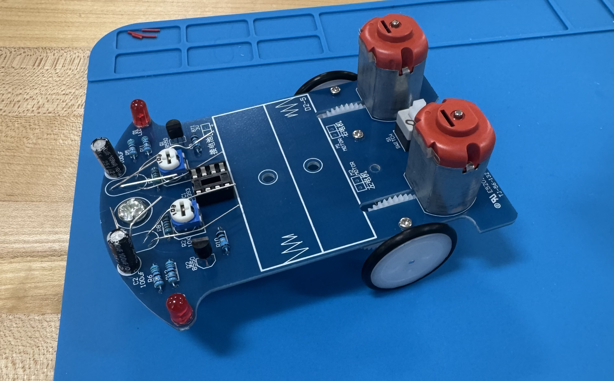 The first step of assembly was to solder all the electrical components to the main PCB. To do this, we each took turns soldering the parts to the board, ensuring that all contacts were made securely.
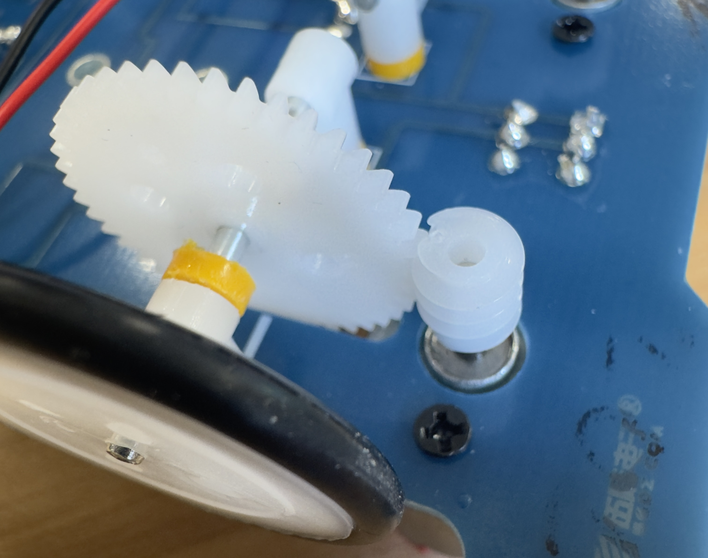 The next step was to make sure the worm gears for the wheels were engaging properly. To do this, we needed to adjust the placement of the worm gear on the shaft of the motor, either moving it up or down depending on the engagement issues. The other method of fixing engagement issues was to push the wheels closer to the motors. We needed both of these solutions in order to get proper engagement of the wheels to the motors.
Once we had the robot assembled and the motors working, we needed to tune the potentiometers. Doing this allowed us to adjust the sensitivity of the light sensors that detect the line beneath the robot. After much testing, we managed to get the tuning perfect so the robot could follow the line as expected. As you can see in the video below, after assembling and tuning the robot, it was successfully able to follow a line around corners and different challenging sections of a tape loop on the floor.
This step of the project took a lot of time due to the number of iterations we made. The first iteration we made for the line following robot was a simple box that was designed using the dimensions we measured from the assembled robot. The dimensions were as follows: 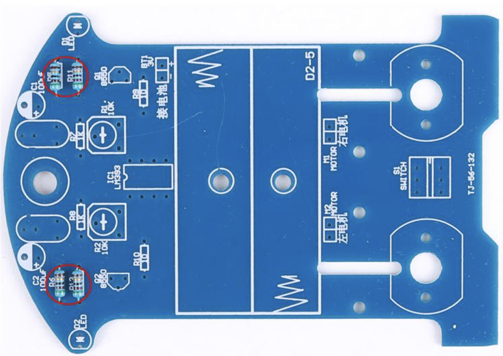 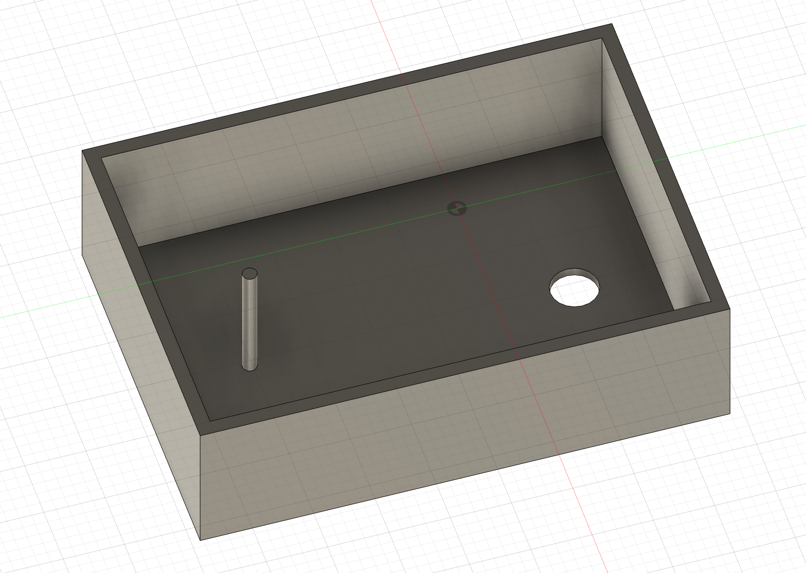 Board Dimensions Board thickness - 1.44mm Inner width - 57.69mm Outer front width - 72.42mm Outer back width - 69.52mm Back indent to front - 100.27mm Back indent depth - 4.1mm Motor Dimensions Depth - 14.87mm Width - 19.8mm Height - 28.25mm The box we made from those dimensions can be seen in the image to the right.
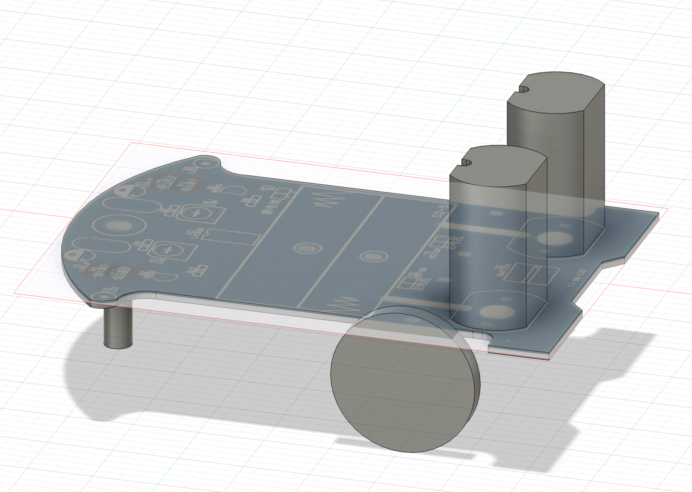 Once the box had finished printing, we realized we got some of the tolerances wrong. I then decided to upload an image of the PCB to Fusion 360 as a canvas and trace out the board so I could build around the PCB. This worked because the length dimension that we had measured from the physical robot was correct so I was able to scale the image proportionally and make sure the length of the PCB in the image matched the dimension we got from the robot. The result was the model seen to the right which has all the big parts built in so we were able to build around that for the future cases.
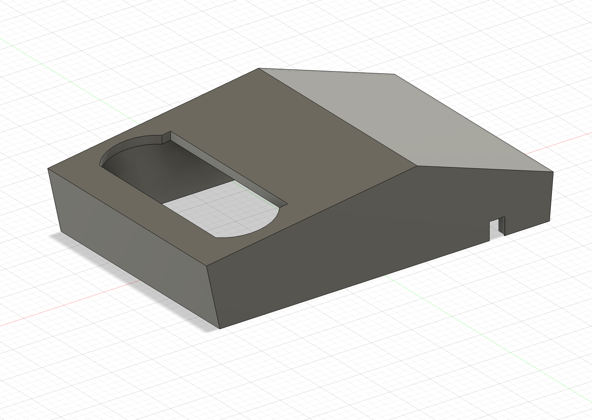 Once the scaling was done, I made a simple case for the robot. I wanted to start simple so I decided to make a cybertruck. This idea was simple because of its low-poly design meaning it is built from very few triangles. To get the shape, I projected a side profile of a cybertruck as a canvas onto the center plane of the long side of the scale model in fusion. I was then able to trace the outline and extrude the sketch both directions to the proper width. Then, I used the combine-as-cut tool to cut out the motors and the wheel arches from the case to ensure they would not get stuck when putting the case on the robot. The final result was a very simple design that was effective at covering the electronics while still giving me access to the power button.
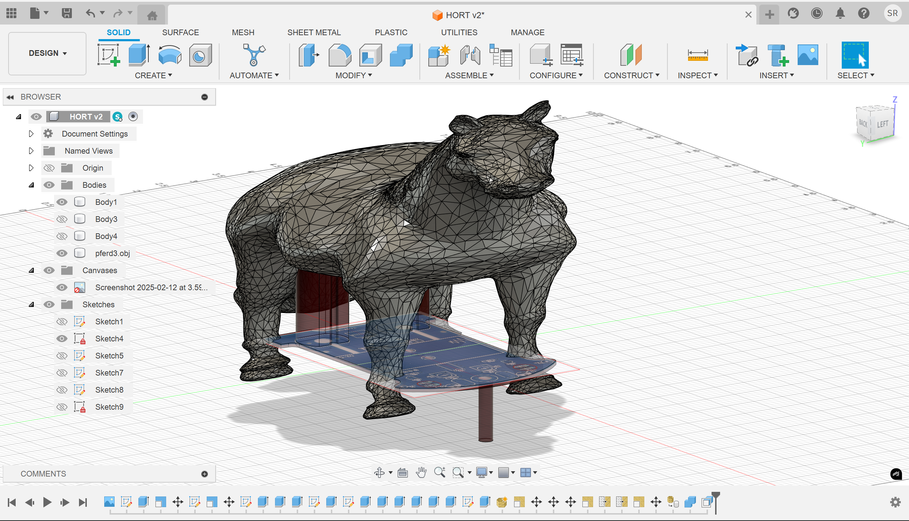 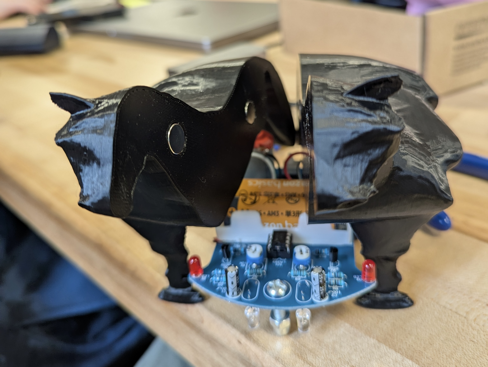 The second case we 3D printed was primarily designed by Seth. This case was of a horse because it fit all the requirements needed for the case design and was an entertaining project. To design this, we started with an existing model of a horse and scaled up each of the dimensions to fit the model of the car I had designed in fusion that I talked about earlier. Once the dimensions were correct, we used the cut tool to cut out slots for the car to sit in the legs of the horse. We then printed out that first iteration and discovered that we were unable to get the car into the slots without breaking the model. We cut two of the legs off to make sure our tolerances were correct and then resliced the model two more times, split in half, once with pins to reconnect the pieces and once with magnets. In the end, the horse with magnets was the most successful iteration of the second case and was a very entertaining project.
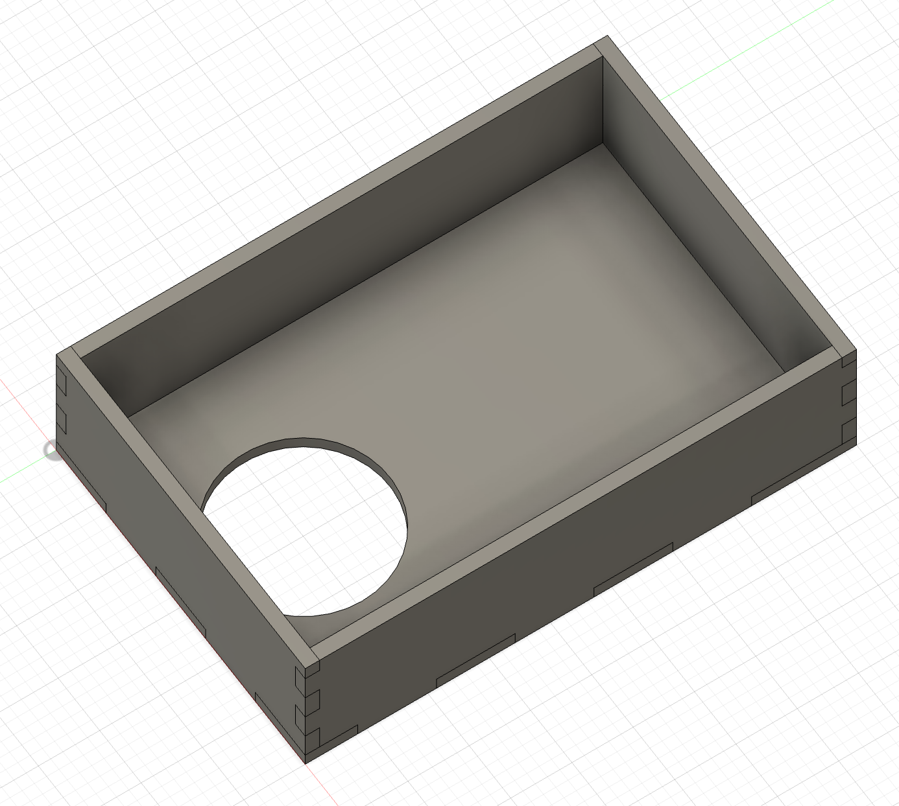 The last part of this project was to laser cut multiple cases/enclosures for the line following robot. The first step of this process was to learn how to make basic finger joint boxes in fusion. After following the recommended tutorial, I ended up with a box that was able to be laser cut on the machine in the classroom. The recommended tutorial had dimensions they used, however I used the dimensions above that we measured from the physical robot so we could have a very basic case for the car. The hole seen in the image was not part of the tutorial, but I added it so we could have a way to access the power switch with the case on the car.
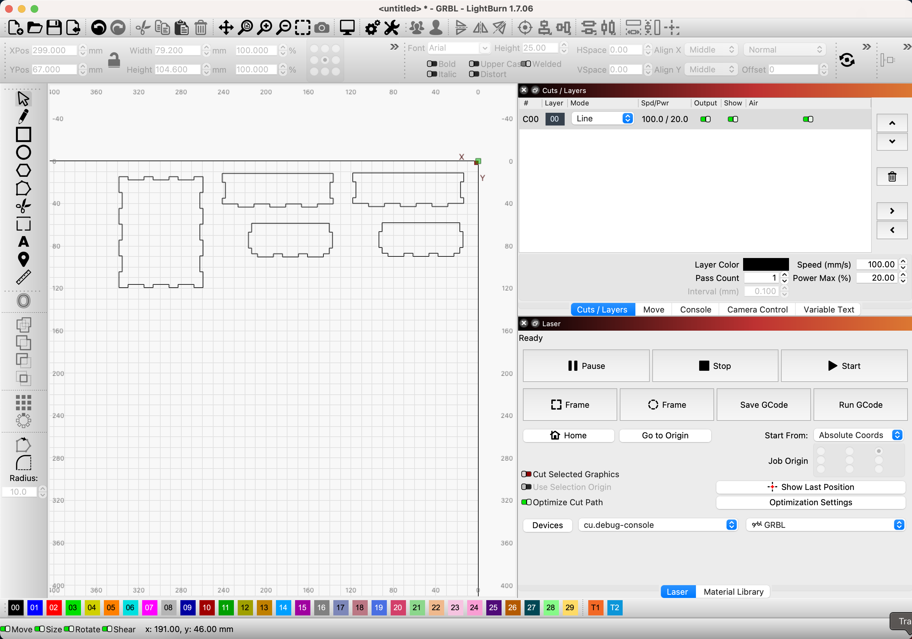 The laser cutter cuts out of a flat sheet of material (acrylic in this case) so we needed the finger joints to hold the sides together. Once all the pieces were cut out, we used hot glue to secure them all together because the joints were too loose to stay together by itself. Once assembled, we realized that the case was slightly too long, so we shortened the length of it and cut it again. This time, we forgot to add the power button hole back in, so we had to follow a different process to cut out the hole after the box was assembled.
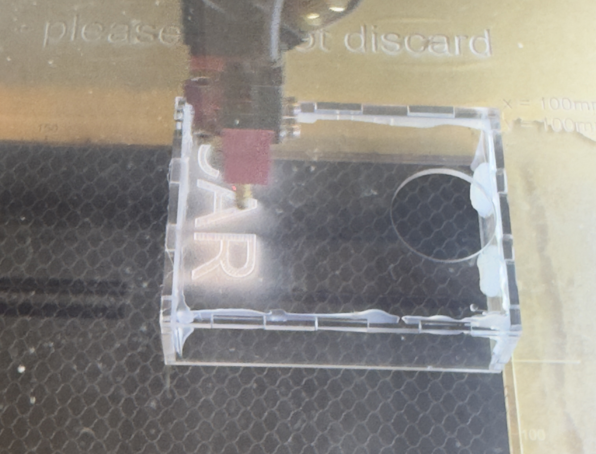 After that box was cut, we cut the hole in it and the car fit perfectly! But the box was too simple for my liking so I decided to engrave the word car, because it was supposed to be the exact opposite of the chaos of the horse we 3d printed. In order to engrave car on the assembled car, I needed to refocus the laser cutter to the higher face than the regular flat sheets typically used. I refocused the the beam to engrave on the top surface of the box and proceed with the engraving.
The end result was a snug fitting case that allowed for visibility to all the components and sensors that was visually appealing and met all the requirements for the design project.